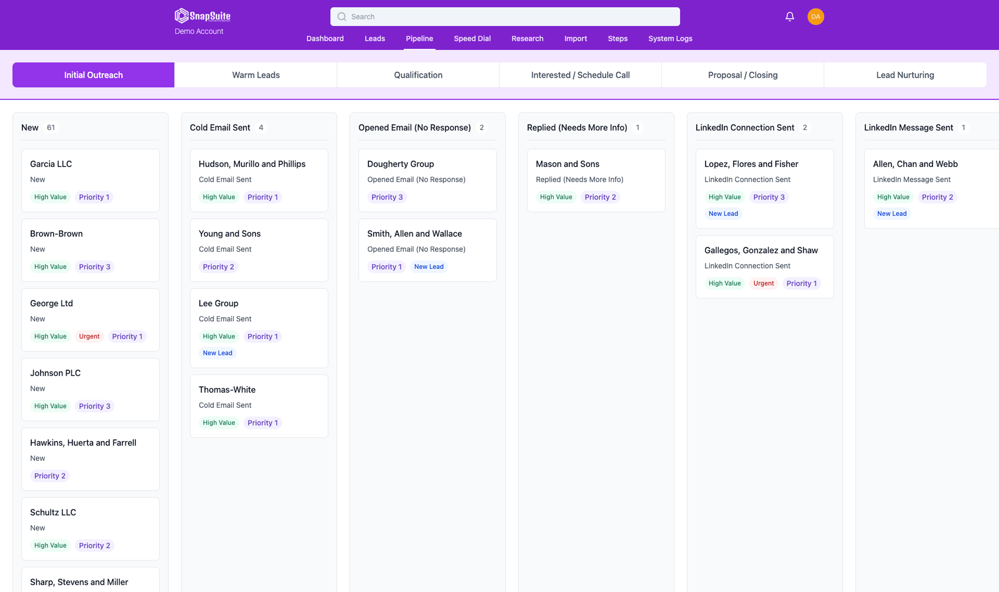

Lead prioritization
Rank and segment prospects so your team knows where attention should go first.
LeadScore AI
LeadScore AI helps business owners and sales teams use AI to research, prioritize, and personalize outreach significantly better while dramatically reducing the amount of manual work required.
Pipeline system
Cold outreach takes time because teams have to find the right leads, understand the account, personalize the message, and decide who deserves attention first. LeadScore AI is built to reduce that workload and improve the quality of the outreach at the same time.
The sales pipeline board brings lead research, prioritization, and outreach execution into one place so teams can keep momentum without manually sorting every account.

Rank and segment prospects so your team knows where attention should go first.
Use AI to gather context faster and reduce the manual prep work before outreach.
Create more relevant cold outreach without writing every message from scratch.
One connected workspace to score leads, prioritize the right calls, and keep the pipeline clean. Built by the SnapSuite team for its own reps first, then opened up for other teams.
Rank leads against your ideal customer profile and read the written scoring explanation before your next call.
Four signal families behind every score, and do-not-contact is a hard gate no score can override.
Import your list, map its fields, and review duplicates and contact validation before any outreach.
Personalized campaigns, one inbox for email, SMS, and call activity, and calling from the lead record.
Scores help reps choose who to review next. They are not a probability or a guarantee of a sale, so measure results against your own baseline.
Bad targets are. Defend the rep and fix the workflow around them.
Scoring without an explanation gets ignored. Every number can be read out loud on a call.
AI should carry the repetitive work around the conversation, and never impersonate the person in it.
Old enthusiasm is not current interest. Scores decay, and today's signal beats last quarter's.
A do-not-contact means exactly that, no matter how high the score.
Context lost between tools is pipeline lost. Everything about a lead belongs in one place.
Sales tools, CRM builds, and AI outreach, tested on real work.

Dwain: Unfinished · 3 hr 10 min

Dwain: Unfinished · 8 min

Dwain: Unfinished · 1 hr 13 min

Dwain: Unfinished · 10 min

Dwain Browne · Live · 2 hr 39 min
Track 2 · LeadScore AI track
For sales teams, B2B companies, manufacturers and distributors, sales leadership groups, chambers and business associations.
Theme: Deciding who deserves the next call, and using AI to prepare reps without replacing their judgment.
Talk 2A
Most sales teams don't need more activity. They need better priorities. Automation makes it easy to send more messages, but volume without context is just noise. This session reframes lead scoring as a way to spend limited selling time on the right accounts, at the right moment, with the right context. It covers the signals that matter (fit, reachability, engagement and timing) and how to tell whether your scoring is actually working.
Talk 2B
A score you can't explain is a score your reps will ignore. This session is a hands-on look at designing an AI-assisted prospecting workflow: defining your ideal customer profile, choosing scoring weights and disqualifiers, writing plain-English reasons a rep can read out loud on a call, and handling the times a rep disagrees with the machine. It also covers the guardrails: recency decay, opt-outs and do-not-contact as a hard stop.
Talk 2C
Industrial and B2B sellers are being told AI will do their outbound for them. This session takes a grounded view. It covers what AI does well (research, list clean-up, first-draft personalization, prioritization) and what still needs a human (judgment, relationships, the actual conversation). It closes with a simple way to pilot AI-assisted prospecting on a small list before rolling it out to a whole team.
All three talks with who they're for, the lengths that work, and related videos. Every session is education first, with no product demo unless you ask for one.
The LeadScore AI website, how scoring works, and social accounts.
Want help applying lead scoring to your team? Send a message about your lead sources, scoring criteria, and sales process.
Book a consultation and we can map your lead sources, scoring criteria, sales process, and automation opportunities.